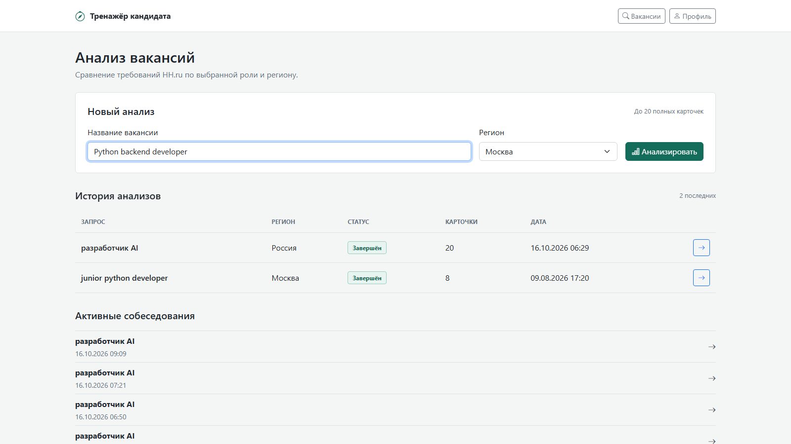
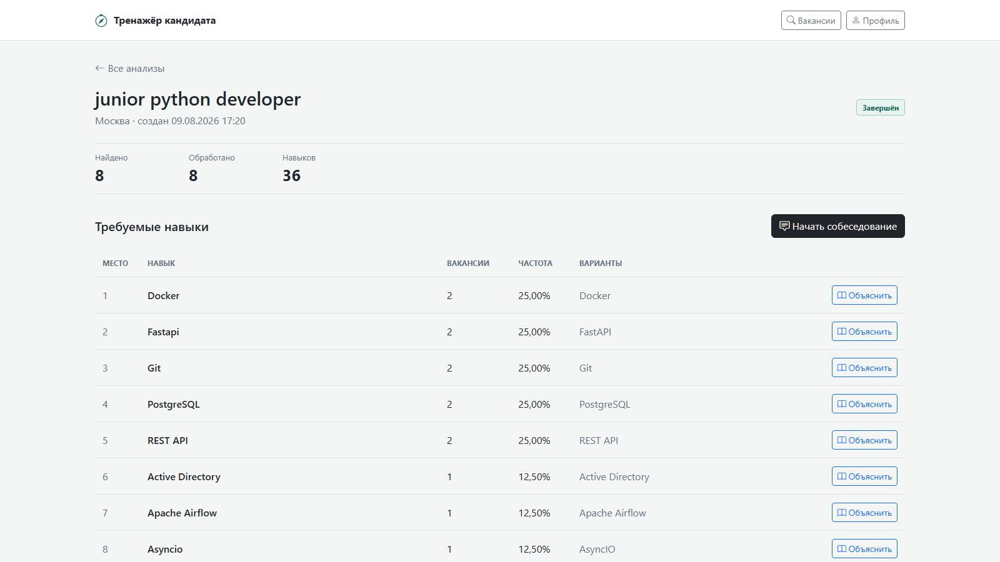
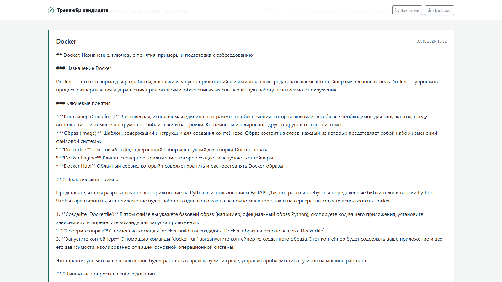
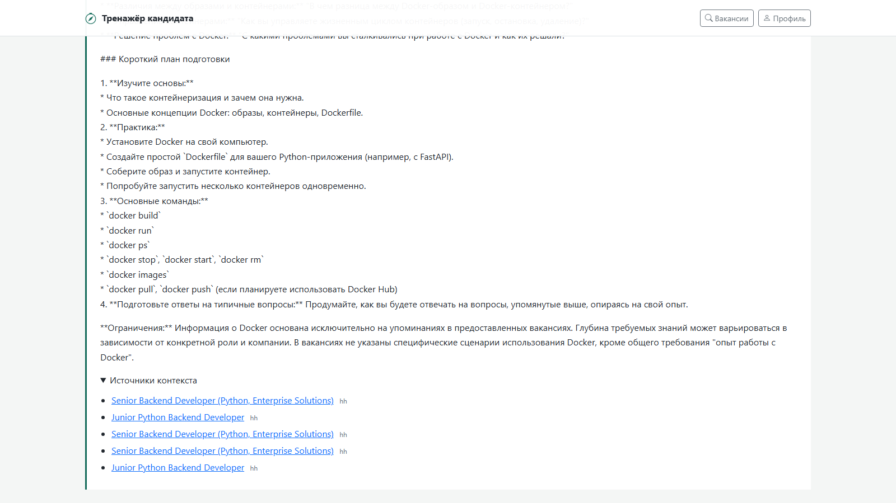
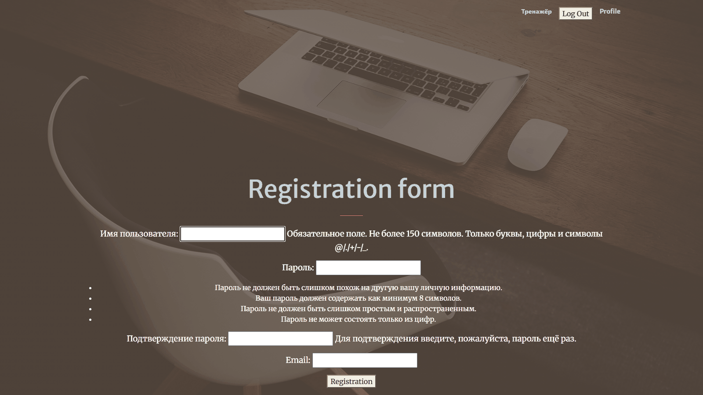
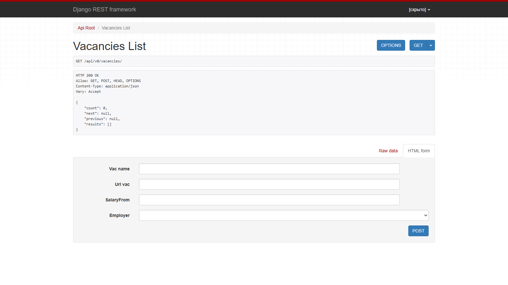
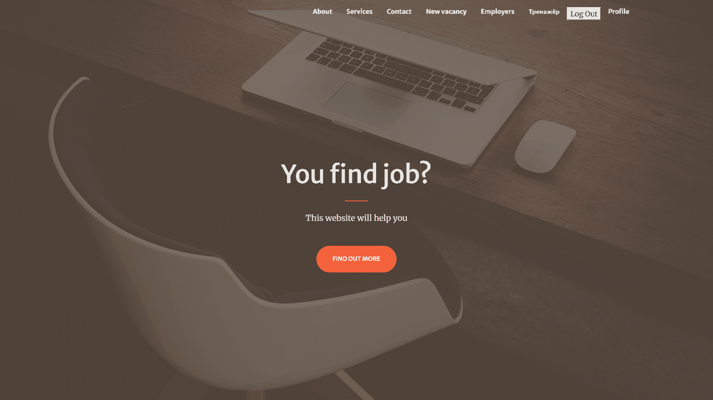
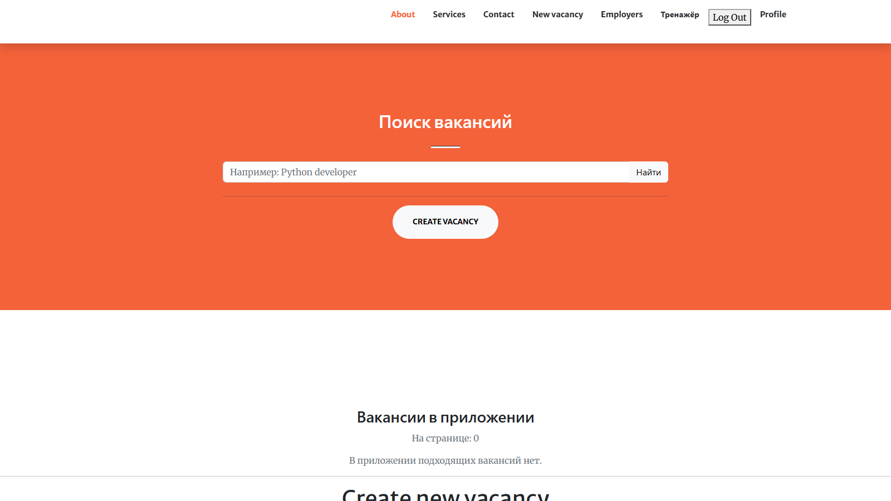
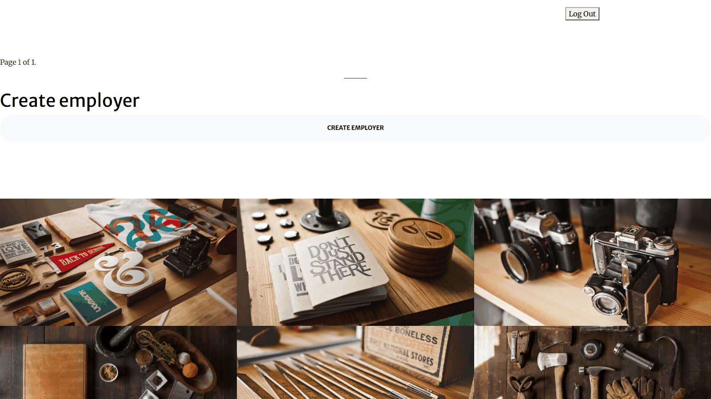
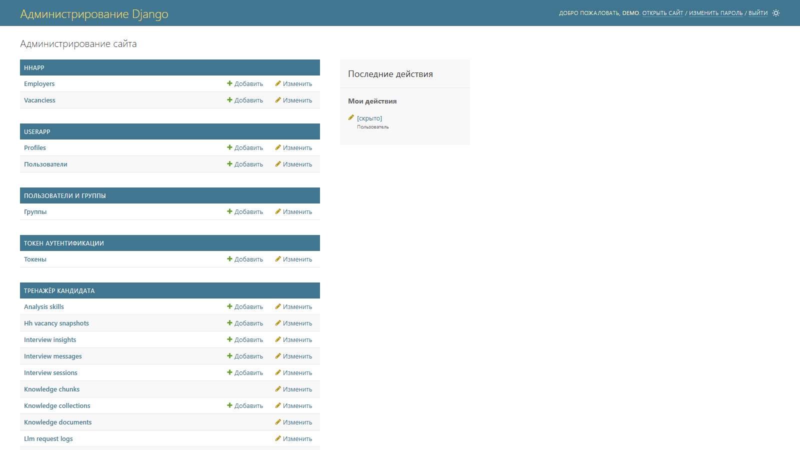

№8 · Готово
Тренажёр кандидата
Форма запуска, два существующих анализа и активные собеседования.
22 октября 2026 · 14 PNG · 1600×900 · каждый файл меньше 500 КБ.
Нажмите на кадр, чтобы открыть оригинал. Все материалы локальные, ничего не опубликовано.
Ответы интервью, имя пользователя и email скрыты только в кадрах. Оценки и рекомендации сохранены: проверьте их перед публикацией. База и пароль не изменены.

Форма запуска, два существующих анализа и активные собеседования.

8 вакансий, 36 навыков, регион и частота по исходным вакансиям.

Сохранённое объяснение: назначение, понятия и практический пример.

План подготовки, ограничения и раскрытый список источников контекста.

Вопрос, три шкалы, пробелы и рекомендации. Текст ответа не публикуется.

Синтетический файл выбран в форме, но загрузка и индексация не запускались.

Существующие коллекции, embedding-модель и количество документов.

Допустимый вариант вместо личного профиля. Поля не содержат персональных данных.

HTTP 200 и реальный JSON текущей базы: count, next, previous и пустой results.

Шапка и исходный дизайн. Блок вакансий расположен ниже.

Поиск и навигация сняты; для готового кадра не хватает локальных вакансий.

Реальные результаты HH.ru, названия компаний скрыты. Локальный список пуст.

В текущей локальной базе нет работодателей; полноценную карточку снять нельзя.

Модели платформы и AI-модуля. Заполненных списков локальных вакансий и работодателей нет.